Uso
Nesta página são apresentados alguns exemplos de uso da classe GSIBerror. Nos exemplos, são consideradas duas matrizes de covariâncias, uma proveniente do Developmental Testbed Center (DTC) e outra calculada a partir dos pares de previsões do modelo de circulação geral da atmosfera do CPTEC1.
Informação
Uma versão desta página para o Jupyter Notebook pode ser encontrada em https://github.com/cfbastarz/GSIBerror/blob/main/read_gsi_berror_python-class-final.ipynb.
Se preferir interagir com o notebook, utilize o Binder, basta clicar no botão abaixo.

A classe GSIBerror
Para utilizar a classe, carregue-a com o comando a seguir:
1 | |
Os módulos a seguir são opcionais e podem ser carregados caso o usuário queira plotar os records da matriz. O módulo cartopy é carregado para plotar as linhas de costa dos records relacionados com a sst (temperatura da superfície do mar) apenas, visto que os demais records, são dependentes apenas das latitudes:
1 2 3 4 5 6 | |
Definição dos arquivos de covariâncias
A seguir, define-se o nome do arquivo a ser lido. No exemplo dado neste notebook, são abertas duas matrizes, fncep (matriz do NCEP) e fcptec (matriz do modelo BAM). Ambas as matrizes possuem dimensões distintas:
1 2 3 4 5 6 7 | |
Utilização da classe GSIBerror
Para utilizar a classe, é necessário criar uma instância para cada uma das matrizes a serem lidas:
1 2 | |
O método read_records
O método read_records é utilizado para ler todos os records (coeficientes de regressão horizontais, comprimentos de escala e variâncias) das matrizes e os seus respectivos atributos (número de pontos de latitude, longitude, níveis verticais) . A documentação deste método pode ser acessada com o comando:
1 | |
1 2 3 4 5 6 7 8 9 10 11 12 13 14 15 16 17 18 19 20 21 22 23 24 25 26 27 28 29 30 31 32 33 34 35 36 37 38 39 40 41 42 43 44 45 46 47 48 49 50 51 52 53 54 | |
Leituras dos records e atributos das matrizes a partir das instâncias ncep_b e cptec_b criadas:
1 2 | |
Verificação dos atributos das matrizes
A matriz de covariâncias utilizada pelo GSI possui uma série de records que podem ser verificados por meio da classe GSIBerror.
Dimensões das matrizes
Para verificar os atributos das matrizes, basta utilizar a instância da classe para a matriz desejada:
nlat: número de pontos de latitude;nlon: número de pontos de longitude;nsig: número de níveis verticais.
1 | |
1 | |
Da mesma forma, para cptec_b:
1 | |
1 | |
Coeficientes de regressão horizontais
Para verificar os records das matrizes, basta utilizar a instância da classe para a matriz desejada:
balprojs: coeficientes de regressão horizontais;amplitudes: variâncias das variáveis de controle;hscales: comprimentos de escala horizontais;vscales: comprimentos de escala verticais.
1 | |
1 2 3 4 5 6 7 8 9 10 11 12 13 14 15 16 17 18 19 20 21 22 23 24 25 26 27 28 29 30 31 32 33 34 35 36 37 38 39 40 41 42 43 44 45 46 47 48 49 50 51 52 53 54 55 56 57 58 59 60 61 62 63 64 65 66 67 68 69 70 71 72 73 74 75 76 77 78 79 80 | |
Observe que os records de balprojs estão armazenados em um dicionário com três elementos agvin, bgvin e wgvin. Estes são os coeficientes de regressão horizontais do GSI, utilizados para construir a parte balanceada da temperatura, velocidade potencial e pressão em superfície:
agvin: coeficientes de regressão para a função de corrente e temperatura;bgvin: coeficientes de regressão para a função de corrente e velocidade potencial;wgvin: coeficientes de regressão para a função de corrente e pressão em superfície.
Segundo o manual do GSI2:
Devido ao tamanho real da matriz de covariâncias (da ordem de \(10^6 \times 10^6\)), a representação da matriz no GSI é simplificada. Para isso, é utilizado um conjunto ideal de variáveis de controle de análise, que são selecionadas de forma que a correlação cruzada entre elas seja mínima (o que implica em menos termos fora da diagonal principal da matriz). Com isso, o balanço (e.g., massa e vento) entre as variáveis de análise é obtido a partir desses coeficientes de regressão horizontais pré-calculados. Além disso, em relação aos erros de previsão, eles são calculados como distribuições Gaussianas com variâncias e comprimentos de escala pré-calculados (offline) para cada uma das variáveis de controle de análise.
Estes records com os coeficientes de regressão podem ser inspecionados da seguinte forma:
1 | |
1 2 3 4 5 6 7 8 9 10 11 12 13 14 15 16 17 18 19 20 21 22 23 24 25 26 27 28 29 30 31 32 33 34 35 36 37 38 39 40 41 42 43 44 45 46 | |
Para bgvin:
1 | |
1 2 3 4 5 6 7 8 9 10 11 12 13 14 15 16 17 | |
Para wgvin:
1 | |
1 2 3 4 5 6 7 8 9 10 11 12 13 14 15 16 17 | |
Para obter os valores mínimos e máximos, eg., dos coeficientes de regressão da velocidade potencial (bgvin), pode-se utilizar os métodos min() ou max() do módulo xarray:
1 | |
1 2 | |
E para max():
1 | |
1 2 | |
De forma simplificada, pode-se fazer também:
1 | |
1 | |
Para plotar os coeficcientes de projeção da velocidade potencial bgvin, basta utilizar o método plot() do módulo xarray:
1 | |
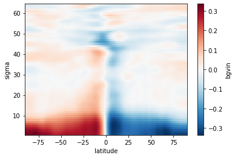
Para cptec_b:
1 | |
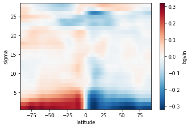
Para comparar os coeficientes de projeção das matrizes instanciadas por ncep_b e cptec_b, pode-se seguir os exemplos a seguir.
Observe que os coeficientes de projeção da temperatura agvin, para as instâncias ncep_b e cptec_b, possuem uma dimensão extra denominada sigma_2. Esta dimensão extra precisa ser fixada para um dos níveis contidos nas instâncias. Utilize o comando ncep_b.levs e cptec_b.levs para obter os valores possíveis para isto (fazendo-se isel(sigma_2=0) escolhe-se o primeiro nível, próximo à superfície e isel(sigma_2=-1) escolhe-se o último nível, próximo ao topo do modelo).
1 2 3 4 5 6 7 8 9 10 | |
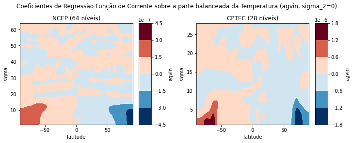
E para o último nível em ambas as matrizes:
1 2 3 4 5 6 7 8 9 10 | |
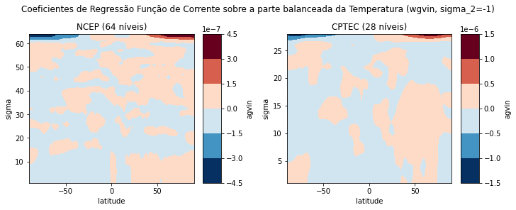
Para o record bgvin:
1 2 3 4 5 6 7 8 9 10 | |
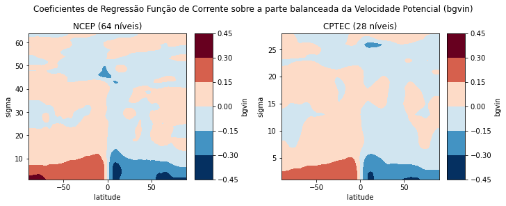
Para o record wgvin:
1 2 3 4 5 6 7 8 9 10 | |
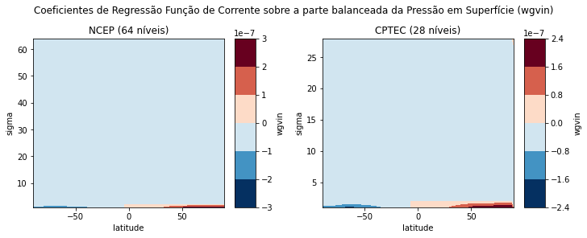
Amplitudes (desvios-padrão)
Para verificar e comparar as amplitudes das instâncias ncep_b e cptec_b, siga os exemplos a seguir.
1 2 3 4 5 6 7 8 9 10 | |
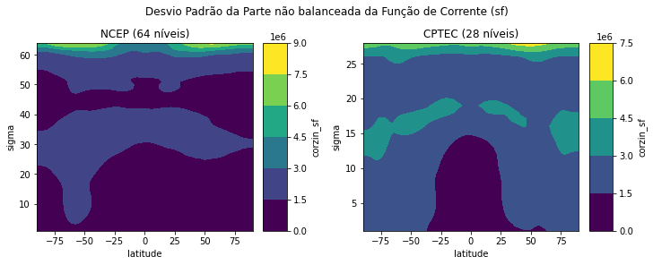
No exemplo a seguir, são comparados os perfis verticais com as amplitudes de sf das instâncias ncep_b e cptec_b:
1 2 3 4 5 6 7 8 9 10 | |
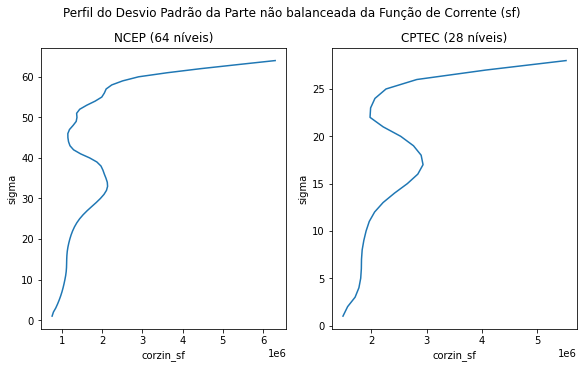
Para a velocidade potencial (vp):
1 2 3 4 5 6 7 8 9 10 | |
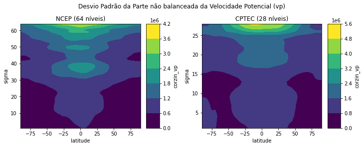
Para o perfil da velocidade potencial (vp):
1 2 3 4 5 6 7 8 9 10 | |
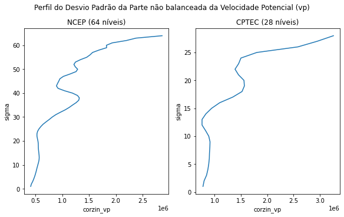
Para a temperatura (t):
1 2 3 4 5 6 7 8 9 10 | |
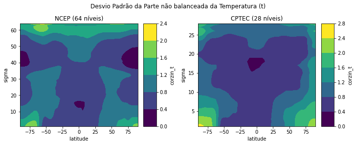
Para o perfil da temperatura (t):
1 2 3 4 5 6 7 8 9 10 | |
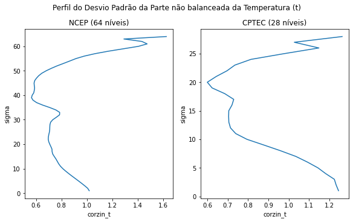
Para a umidade relativa (q):
1 2 3 4 5 6 7 8 9 10 | |
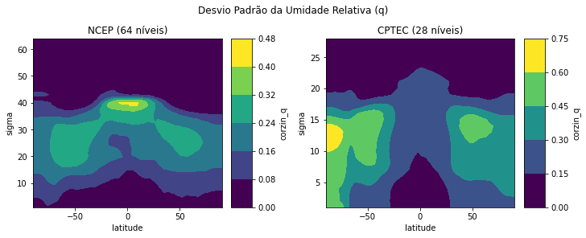
Para o perfil da umidade relativa (q):
1 2 3 4 5 6 7 8 9 10 | |
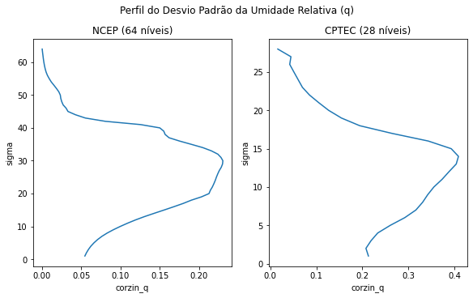
Para o ozônio (oz):
1 2 3 4 5 6 7 8 9 10 | |
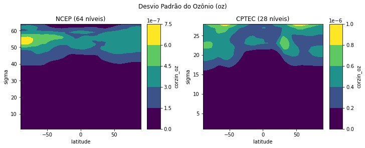
Para o perfil do ozônio (oz):
1 2 3 4 5 6 7 8 9 10 | |
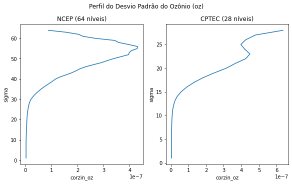
Para o conteúdo de água líquida (cw):
1 2 3 4 5 6 7 8 9 10 | |
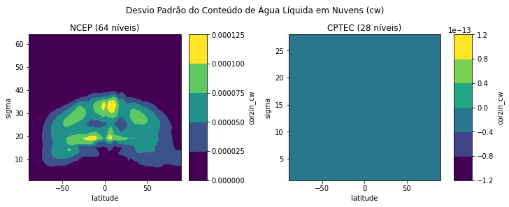
Para o perfil do conteúdo de água líquida (cw):
1 2 3 4 5 6 7 8 9 10 | |
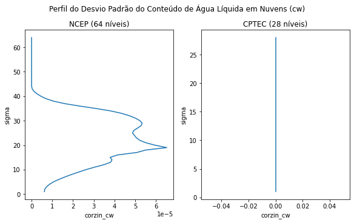
Para pressão (ps):
1 2 3 4 5 6 7 8 9 10 | |
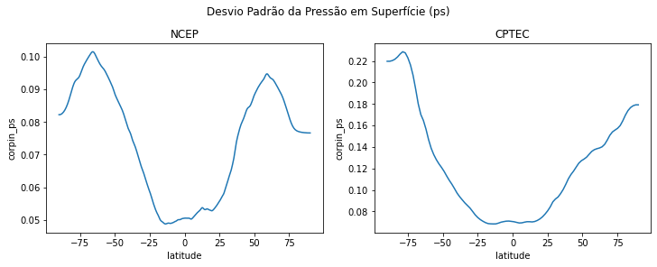
Nas figuras a seguir, são mostradas as aplitudes de sst das instâncias ncep_b e cptec_b.
1 2 3 4 5 6 7 8 9 10 11 12 13 14 15 16 17 18 19 | |
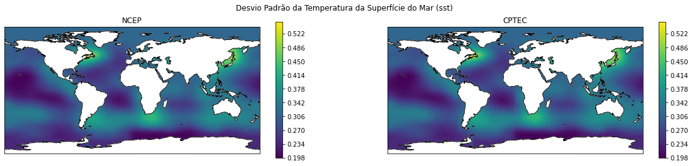
Comprimentos de escala horizontais
Assim como as amplitudes, os comprimentos de escala horizontais das instâncias ncep_b e cptec_b também podem ser comparadas. Veja os exemplos a seguir:
1 2 3 4 5 6 7 8 9 10 | |
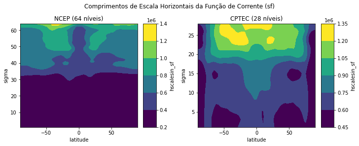
Para a velocidade potencial (vp):
1 2 3 4 5 6 7 8 9 10 | |
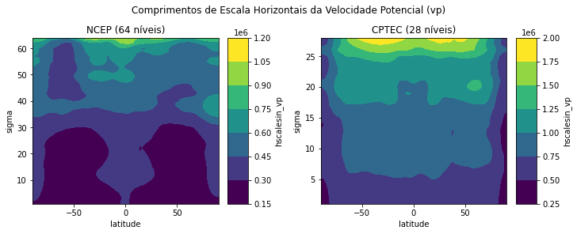
Para a temperatura (t):
1 2 3 4 5 6 7 8 9 10 | |
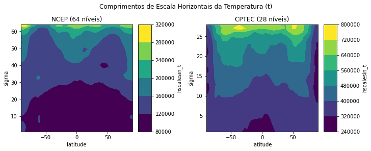
Para a umidade (q):
1 2 3 4 5 6 7 8 9 10 | |
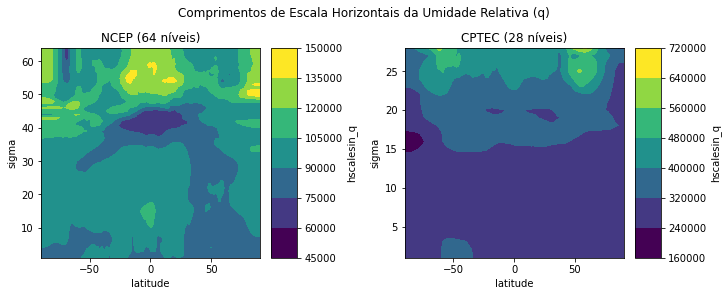
Para o ozônio (oz):
1 2 3 4 5 6 7 8 9 10 | |
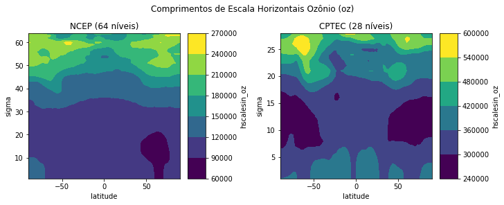
Para a pressão (ps):
1 2 3 4 5 6 7 8 9 10 | |
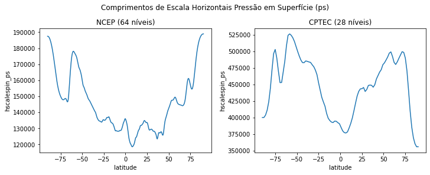
Para a temperatura da superfície do mar (tsm):
1 2 3 4 5 6 7 8 9 10 11 12 13 14 15 16 17 18 19 | |
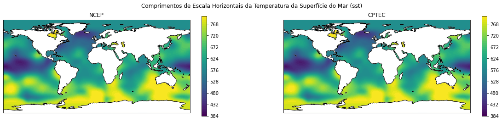
Comprimentos de escala verticais
Assim como as amplitudes e os comprimentos de escala horizontais, os comprimentos de escala verticais das instâncias ncep_b e cptec_b também podem ser comparadas. Veja os exemplos a seguir:
1 2 3 4 5 6 7 8 9 10 | |
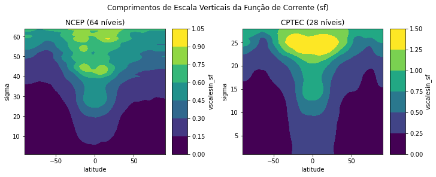
Para a velocidade potencial (vp):
1 2 3 4 5 6 7 8 9 10 | |
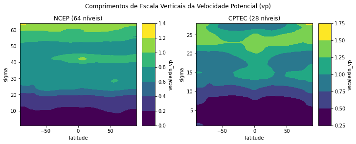
Para a temperatura (t):
1 2 3 4 5 6 7 8 9 10 | |
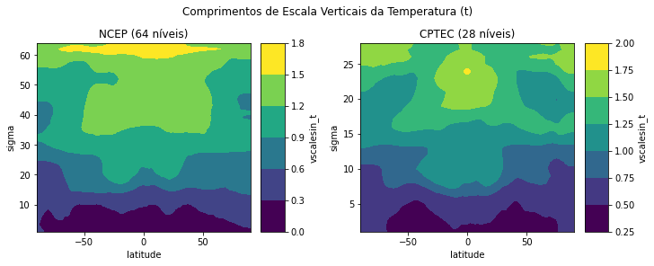
Para a umidade relativa (q):
1 2 3 4 5 6 7 8 9 10 | |
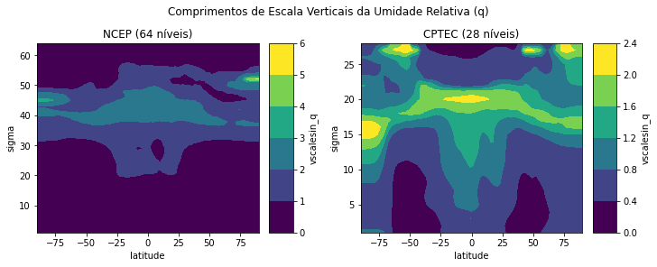
Para o ozônio (oz):
1 2 3 4 5 6 7 8 9 10 | |
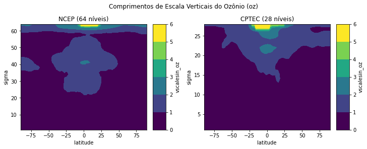
Para o conteúdo de água líquida (cw):
1 2 3 4 5 6 7 8 9 10 | |
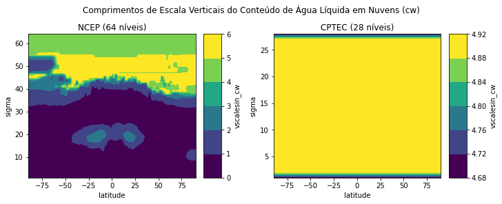
-
Matriz de Covariâncias dos Erros de Previsão Aplicada ao Sistema de Assimilação de Dados Global do CPTEC: Experimentos com Observação Única. Disponível em: https://www.scielo.br/j/rbmet/a/8LQNdCV9jJM9whJdpkDLfCh/abstract/?lang=pt&format=html. ↩
-
Disponível em https://dtcenter.org/community-code/gridpoint-statistical-interpolation-gsi/documentation. ↩